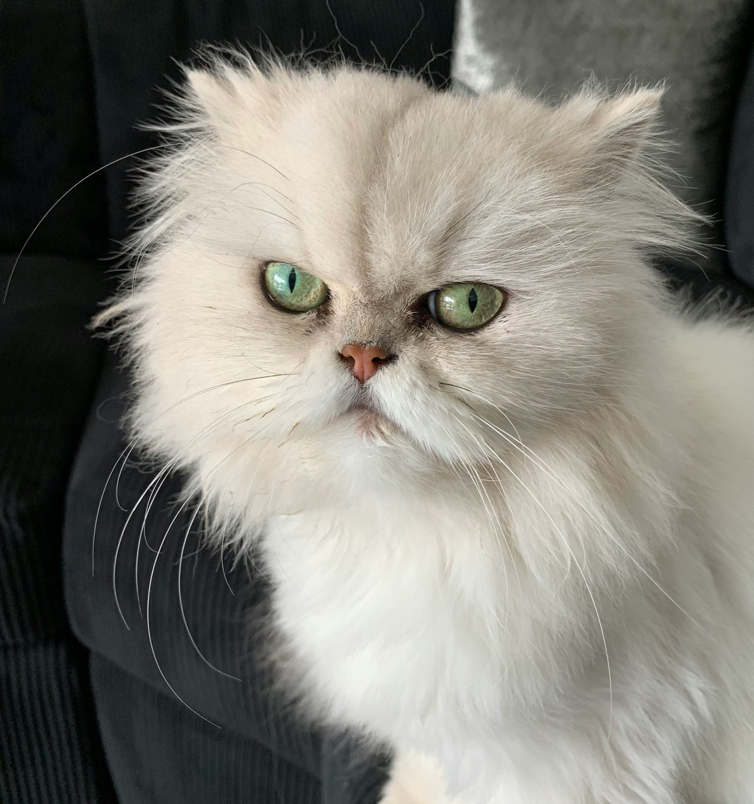
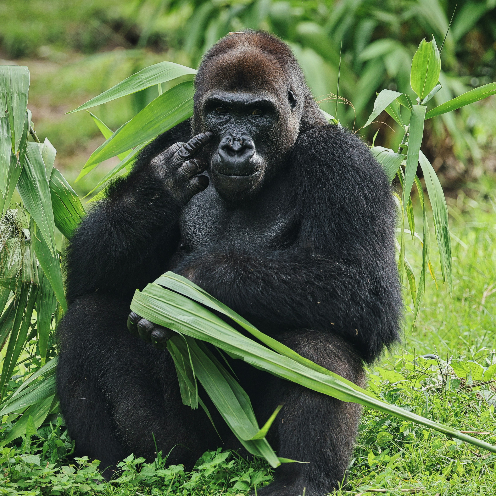
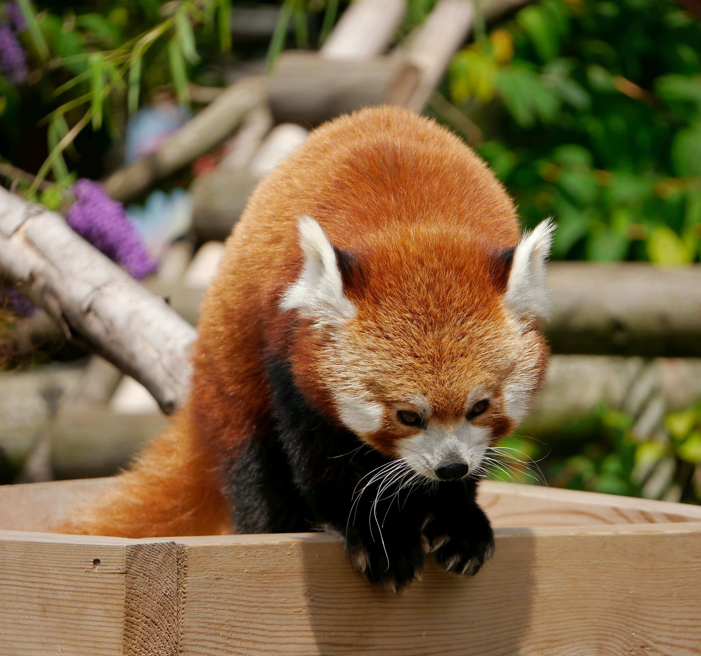
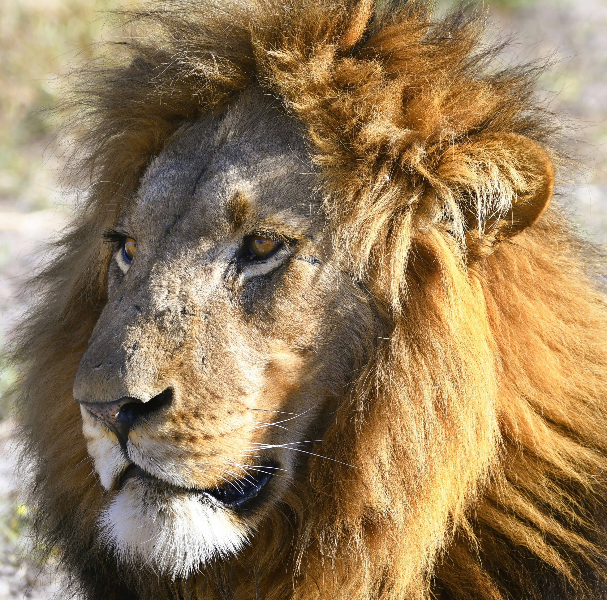
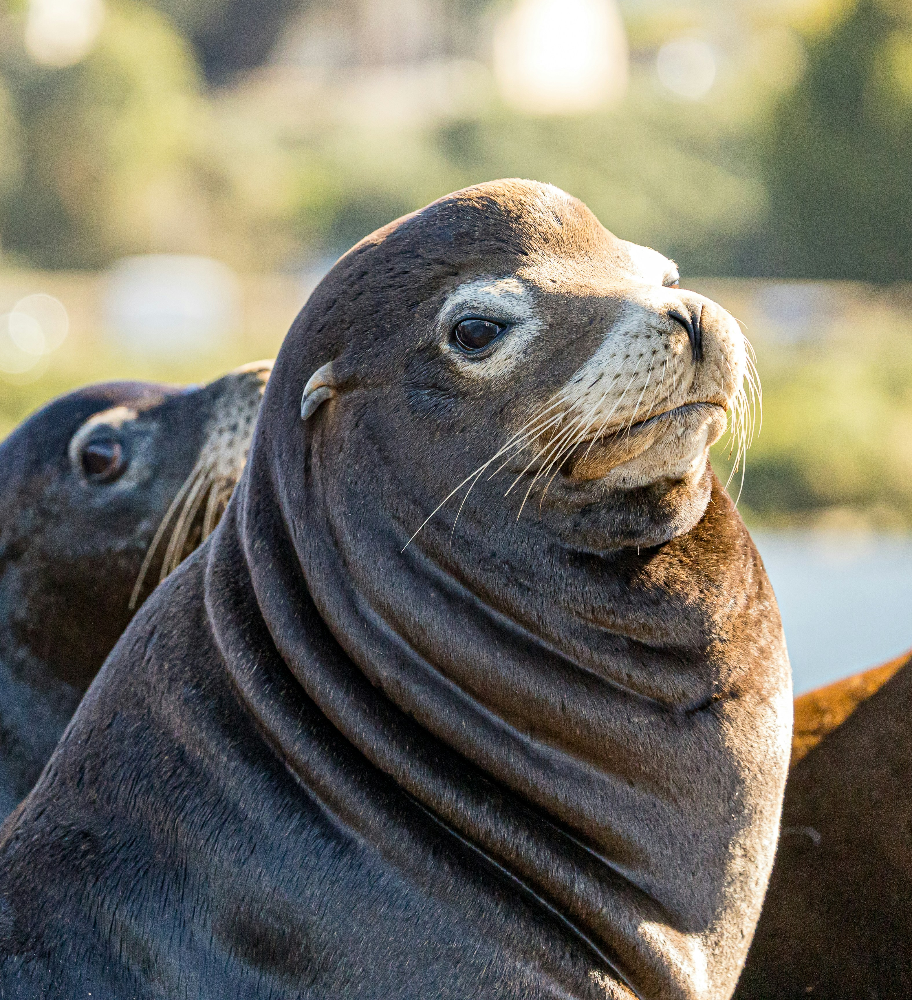

Gato Persa
El gato persa es una raza de gato doméstico conocida por su pelaje largo y su cara aplanada.

Gorila espalda plateada
Estos enormes primates están en grave peligro, ya que forman parte de las especies en extinción.

Panda Rojo
Un panda rojo es un mamífero omnívoro originario de los bosques templados de los Himalayas y el sur de China.

León
El león es un gran felino conocido como el "rey de la selva", caracterizado por su fuerza con sus mandíbulas poderosas.

Foca
La foca es un mamífero marino con cuerpo hidrodinámico, aletas en lugar de patas traseras que no son funcionales para caminar.

Rinoceronte
El rinoceronte es un mamífero herbívoro de gran tamaño, con una piel gruesa y uno o dos cuernos en el hocico.